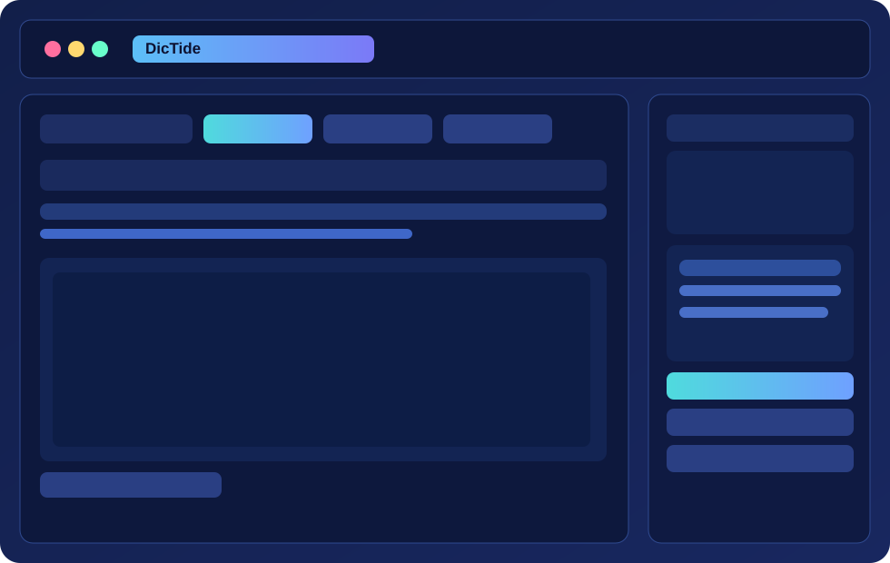

Global Hotkeys
Capture the next key/chord, then run in toggle or hold mode with optional double-tap.
A vibrant offline dictation experience for Windows with customizable hotkeys, multiple Whisper models, and one-click installer distribution.

Capture the next key/chord, then run in toggle or hold mode with optional double-tap.
Dictate locally with faster-whisper and keep transcription data on your machine.
Use presets from tiny to turbo, local converted folders, or Hugging Face model IDs.
Close to tray, prevent duplicate launches, and keep dictation controls available.
Choose your preferred package for Windows 10/11.
Select mic, model, hotkey, and inject behavior.
Press Start (or hotkey), speak naturally, then Stop.
Transcript appears in-app, copies to clipboard, and can inject into the target field.
No. Transcription is local/offline after model download.
Try a less common key and run with admin rights if hooks are blocked by policy/software.